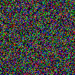

Write an image file from a quaternion array.
(Quaternion overloading of standard MATLAB® function)
imwrite(A, filename, fmt)
imwrite writes an image file from data stored in a pure quaternion array. It supports the same parameter profiles as the MATLAB® function of the same name, but the first parameter must be a quaternion array with elements of type uint8, uint16, or double. The type of image written to the file depends on the quaternion data in the array A. If the quaternion data has components of type uint16, then 16-bit samples will be written to the file. In all other cases 8-bit data will be written to the file. uint8 or uint16 pixel values are not scaled - they are written directly to the image file. double or single pixel values are assumed to be in the range [0, 1] and are scaled by 255 before writing to the file. This behaviour follows from the behaviour of the overloaded MATLAB® function which is used to write the image file after reformatting of the quaternion data into the form used by the MATLAB® function.
The function supports the same image file types as the MATLAB® function.
>> imwrite(randv(128), 'random.png')
results in the creation of an image file like the result following. In this case, because randv generates double quaternion data with component values in the range [0,1], the data is automatically scaled to the integer range [0,255] before writing to the Portable Network Graphics file.
